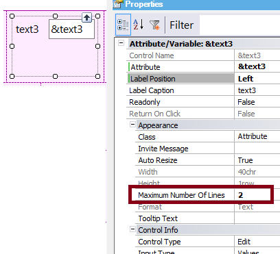
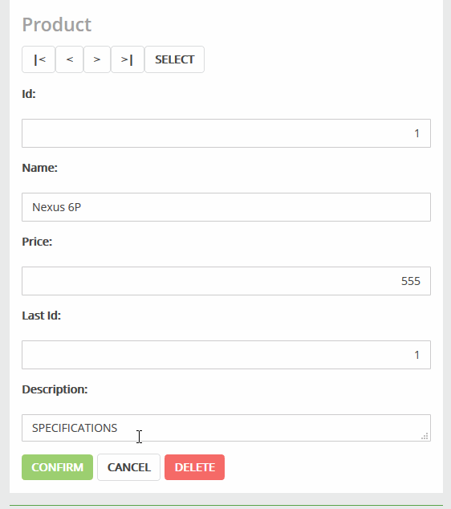

It allows determining the maximum number of lines that a character field will have in edit mode (in particular for text area fields). So, the field height can grow dynamically when the user enters data.
The field starts with an initial height determined by the height property. The height is a read-only property and is automatically calculated by GeneXus depending on the character length of the control.
When the user enters data, the field grows up to the maximum number of lines specified in the property.
- Only supported in RWD Editor
- The property value should always be greater than the height property value.
- If you need to change the Height property value, just configure Autoresize Property = False. Then, the Height can be specified by the user as well as the Max number of lines property (the last one is always updatable by the user). This is the way to specify the initial height of the text area (Height property) and the top Height (Max number of lines property).

| 0 |
The field doesn't expand.This is the default value. |
| 1 |
The field has only one line; it never grows. |
| x > 0 |
The field expands to x lines while the user enters data. |

|